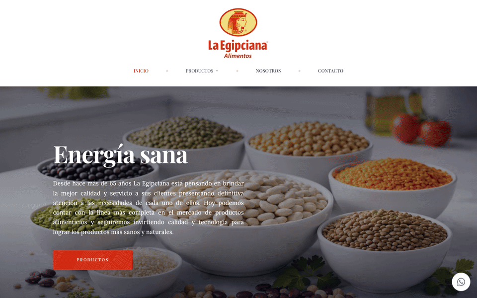

La Egipciana · Landing page
Actualización de contenido de landing page existente, enfocada en revisar, completar y actualizar la información manteniendo la estructura y el diseño original.

Qué hacemos
Trabajos seleccionados
Una selección de proyectos en los que estrategia, creatividad y ejecución trabajaron juntas.
¿Tenés un proyecto parecido?